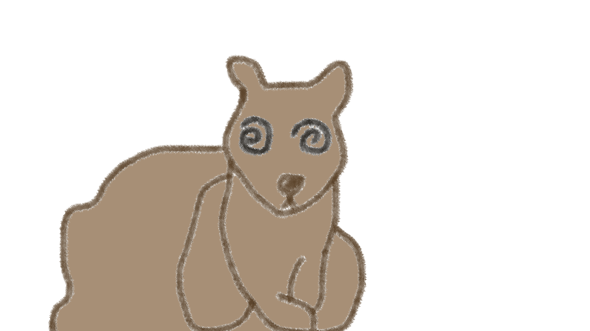

Meatlarf was created with the intention of becoming the main character in the next line of silly cartoon animals that would entertain kids and hopefull run pockets dry. Unfortunately, the only pockets left empty were those of the company, as they quickly became bankrupt. Sadly, meatlarf was the only character created before things went awry, leaving him to be a bit of a lonely squirrel-mouse. And a little unstable. He's been alone for quite some time, ya know?
